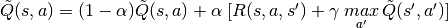
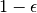
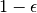
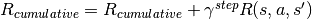
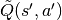

Homework 3 - Programming Section¶
Welcome to Programming section of Homework 3 for CSE 571 - Fall 2019.
This section will test your understanding of Reinforcement Learning as covered in the class.
Homework is due at 11:59 PM on November 12, 2019. Please plan your submission early to avoid last moment hiccups.
Plagiarism Warning¶
Powerful copy-detection systems will be used as part of grading, so please DO NOT submit/use any piece of code that is not your own work. These systems can easily catch instances where users change variable names, etc. from copied code.
If you use any helper code, do not forget to cite it using comments inside the code.
If you are stuck at any point, you can approach the professor or TA for help.
As mentioned in class, please remember the academic integrity policy of this course. We have detected plagiarism in last 2 homeworks and appropriate action according to the course policy was taken.

Tasks¶
[20 points] Compute the Q-values using the 3 sample trajectories provided in trajectories.json files. Export the calculated Q values into a json file.
Note
Use the following equation to perform updates to the Q values.

[15 points] Compute a policy to organize books using Q-learning. Use an
 -greedy policy, which selects at each state, the best action according to current Q values with probability  and selects a random action with probability . For episode number i, use = max(0.05, 0.7 - 0.05 i). Start with Q values as zero for all state-action pairs. Plot a graph for number of episodes (x-axis) v/s cumulative reward (y-axis) after performing Q-learning for those episodes. The environment must have books of 1 subject with 1 book of each size for each subject. Generate this plot for 500 episodes.
-greedy policy, which selects at each state, the best action according to current Q values with probability  and selects a random action with probability . For episode number i, use = max(0.05, 0.7 - 0.05 i). Start with Q values as zero for all state-action pairs. Plot a graph for number of episodes (x-axis) v/s cumulative reward (y-axis) after performing Q-learning for those episodes. The environment must have books of 1 subject with 1 book of each size for each subject. Generate this plot for 500 episodes.Note
Use the following equation to perform cumulative reward for task 2 and task 3.

[15 points] Create a set of pruned action consisting only executable actions for each state, meaning a pick/place should only be performed when the turtlebot is at load location of any of the books/bins. Plot a graph for number of episodes (x-axis) v/s cumulative reward (y-axis) after performing Q-learning for those episodes. The environment must have books of 1 subject with 1 book of each size for each subject. Generate this plot for 500 episodes.
Note
Use books.json to get the load locations of books and bins. Use this information to rule out invalid pick/place actions.
[10 points] For which class of models would you prefer to use the approach developed in HW2 over the approach developed in this homework? For which class of models would you prefer the approach developed in this homework over that developed in HW2? For which class of models would you prefer value iteration or policy iteration over both? Describe model classes for this question in terms of deterministic or stochastic actions, full or partial observability, and availability of the T and R functions.
Please refer to instructions section to understand what these tasks mean and how to setup the environment. It also includes a number of tips that will significantly simplify your task. Follow the instructions strictly to ensure that your assignment can be graded by the auto-grader. Custom grading requests will not be entertained.
Submit graphs for task 2 and task 3, and the answer to task 4 in the pdf that you’ll submit for the Theory Section.
Grading Policy¶
- If the submission is late by 24 hours, you are entitled to 30% to the score you’ll get for the homework.
- No points will be given if the assignment is submitted later than 24 hours.
- In order to get full points for task 1-3, your final submitted code should run without any input or configuration from the TA. If any changes are required to get your submitted code to run, points will be deducted in a manner proportional to the number of changes needed. If you follow the instructions your code will run without any inputs from the TA.
- Homework will be graded on Ubuntu 16.04 machines setup with ROS Kinetic, and Python 2.7. Use the setup from HW0 to ensure your code runs as intended with this configuration.
Instructions¶
Setting up Reinforcement Folder¶
We assume that you have completed the setup as instructed in Homework 0. Refer to Homework 0 Webpage for details.
Clone the “reinforcement” folder from Github to ~/catkin_ws/src/
cd ~/catkin_ws/src && git clone https://github.com/AAIR-lab/reinforcement.git
Change permission of all scripts in reinforcement folder to make them executable.
chmod u+x ~/catkin_ws/src/reinforcement/scripts/*.py
Execute the env_setup.sh script. It will copy the necessaty files in respective folders. This script will fail if you don’t have turtlebot folder in ~/catkin_ws/src. Refer Homework 0 setup if this is the case.
chmod u+x ~/catkin_ws/src/reinforcement/env_setup.sh && ~/catkin_ws/src/reinforcement/env_setup.sh
Environment Setting¶
Refer the image below to see how a sample maze environment looks like. The turtleBot has a basket on top of it. There are books of 2 different sizes (large and small) and 2 different subjects lying around on the maze. There are 4 destination bins, 2 of each subject. Each subject has bins of 2 sizes, large and small. Each book has a designated bin, depending on its size and subject.

Some of the terms that we use throughout the assignment are:
- Book and Bin Size: There are two sizes for the books and bins. Large and Small.
- Number of Subjects: This is the number of distinct subjects. This number can vary between 1 and 10 inclusive. For each of the subject, two different bins will be generated; large and small.
- Number of Books: This is the number of books you have of each subject in each size. This number can vary between 1 and 5 inclusive. So actual number of books in the whole environment is number of books * number of subjects * 2.
- Load Location: Every book and bin has multiple load locations. For a book it is the set of locations from where it can be picked by the TurtleBot. For a bin it is the set of locations from where the TurtleBot can place the books into this bin.
Warning
We gave multiple load locations because it is possible that one of the book’s load location is obstructed by another book. Same can also happen for a bin. In such a case the TurtleBot can go to the another load location and perform the pick or place operation.
Grid Size: Grid Size is not used explicitly in this homework. It is dependent on the number of books. For this homework, Grid Size = 6 * number of subjects.
Note
Similar to the previous homework, the actual grid size used for navigation is different from what is seen in Gazebo environment. Each of the square seen in Gazebo is divided into 4 equal squares.

Fig 1. Grid visible in Gazebo

Fig 2. Actual navigation grid
Hence, if you have to go from point A to B in Gazebo environment using ‘MoveF’ action, you will have to give ‘MoveF’ command twice. If you give the ‘MoveF’ command once, the TurtleBot will stop at T.
Moving TurtleBot¶
On a terminal, run roscore.
roscore
In a new terminal session, run the server file (located at ~/catkin_ws/src/reinforcement/scripts/server.py). Use the arguments to provide the number of subjects, number of books of each subject, and random seed.
rosrun reinforcement server.py
Use – help option to see how to pass arguments to the server.
$ rosrun reinforcement server.py -h usage: server.py [-h] [-sub 2] [-b 1] [-s 32] [-action_seed 32] [-headless 1] optional arguments: -h, --help show this help message and exit -sub 2 for providing no. of subjects -b 1 for providing no. of books for each subject of each size -s 32 for providing random seed -action_seed 32 for providing action selection random seed -headless 1 1 to run in the headless mode, 0 to launch gazebo
Running server.py will generate a random environment with number of books and number of subjects mentioned in parameters of the server.py.
If you are not running server in headless mode, launch the maze in a new terminal.
roslaunch reinforcement maze.launch
If you are not running server in headless mode, run the move_tbot3.py file in a new terminal. It enables the movement of TurtleBot3.
rosrun reinforcement move_tbot3.py
Run qlearning.py. Use -h to see what parameters to pass it.
$ rosrun reinforcement qlearning.py -h usage: qlearning.py [-h] [-task 1] [-sample 1] [-episodes 1] optional arguments: -h, --help show this help message and exit -task 1 Task to execute: 1. Q learning on sample trajectories 2. Q learning without pruned actions 3. Q learning with pruned actions -sample 1 which trajectory to evaluate (with task 1) -episodes 1 Number of episodes to run (with task 2 & 3)
Files and Dictionaries¶
trajectories.json
The file lists a sequence of states and actions for the given episode in the specified sequence. Each element in the json is a dictionary with the following format:
Note
- {
“state” : “…”, // dictionary representation of the current state serialized into a string “action” : “…”, // the action taken in the current state “reward” : “…”, // the reward received for execution the given action in the given state
}
The first element in the trajectory is the initial state. Executing the given action in that state will change the environment into the next state.
You’ll notice that the penultimate action is giving you the reward of completing the task (500). The final action is given so that you can use the state to calculate reward using R(s,a,s’) formulation. Ignore the reward of the final action.
action_config.json
Lists all actions and their rewards, probabilities etc.
Format:
Note
- {
- “<action_name>”: {
“function”: “<function to execute inside action_server.py>”,
“params”: [<list of parameters accepted by corresponding function in action_server.py (must be in same order)>],
“success_reward”: <reward if action succeeds>,
“fail_reward”: <reward if action fails>,
“possibilities”: {
“<action_name>”: <probability of execution>, #<action_name> corresponds to an action in the config
“<action_name>”: <probability of execution>,
.
}
}, . .
}
You’ll notice that each action has 2 versions, careful and normal. The only difference between careful and normal actions is that careful actions have a higher probability of being successful and have a higher cost. There are a total of 10 actions:
- careful|normal MoveF: If successful, moves turtlebot3 forward, otherwise turtlebot3 stays still.
- careful|normal TurnCW: If successful, rotates turtlebot3 in clockwise direction by 90 degree, otherwise, turtlebot3 stays still.
- careful|normal TurnCCW: If successful, rotates turtlebot3 in counter-clockwise direction by 90 degree, otherwise, turtlebot3 stays still.
- careful|normal pick book_i: If successful, picks the book_i, otherwise no effect.
- careful|normal place book_i bin_k : If successful, places book_i in bin_k
Once you put a book in a bin, there is no way to take that book out. When all the books are placed in to some bins, the terminal state is reached. Taking actions in terminal states have no effect on the state and no reward is obtained.
Q value dictionary
Your Q value dictionary should follow the following format:
Note
{
“<state representation>” : {
“<action1>”: <Q_value>,
“<action2>”: <Q_value>, . . .
},
“<state representation>” : {
“<action1>”: <Q_value>,
“<action2>”: <Q_value>, . . .
}, . . .
}
Here state representation for a state can be generates using state dictionary in the following manner:
current_state = self.helper.get_current_state() state_representation = json.dumps(current_state)
Here you can see state representation for current_state. This can even be used as a key in dictionary.
Sample Action Config Explanation:
Note
- {
- “pick”: {
“function”: “execute_pick”,
“params”: [“book_name”],
“success_reward”: 25,
“fail_reward”: -25,
“possibilities”: {
“pick”: 0.85,
“noaction”: 0.15
}
},
}
The action name above is defined as pick. It corresponds to the execute_pick function implemented in action_server.py. The function takes 1 variable parameter i.e. book_name defined in the params key. The reward for successful execution of this action is 25 and reward for a failed execution is -25. The given config defines a stochastic environment where executing this action pick can result in pick being executed with probability 0.85 or a no-op action (defined as noaction) with probability 0.15
To convert this to a deterministic action, we can change the probability of a pick action to 1
FAQs …¶
- For task 1 we get the next state from the json file. As I can see, in given trajectories every state is new, no previous state is being revisited. In that case, won’t  always be 0?
- In the given trajectory, yes that is the case however your implementation should correspond to the Q-learning formulation. Your implementation can be tested for different trajectories where a state might get visited multiple times. We gave these trajectories so that you can verify if your Q value updates are correct.
- While choosing the next action based on the -greedy, do we also have to model the uncertainty of the action being successful?
- No, execute_action() has modeled those scenarios. It will return if the action was successful or not.
- While choosing the next action based on the
- If execute action fails, then do I have to calculate the Q-value of that action in current state and update in the dictionary of that current state?
- Yes. We still update the Q values for the current state. For this case of a failed action, the next state is still your current state.
- What is this headless mode?
- Gazebo can be run in a headless mode in which the Gazebo UI is not launched. The physics engine and other gazebo processes still run in the background. This reduces the load on system.
Tips and Suggestions¶
Test your implementations with smaller environments of 1 subject 1 book (-sub 1 -b 1) as one episode of a 2 subject 2 book environment can take over 2 hours to complete.
Train your implementation in headless mode, so that you can reset the world after each episode.
Remember to source the setup.bash file in each of the new terminal you start.
source ~/catkin_ws/devel/setup.bashCheck the discussion page on Canvas to see if the problem you are facing is already answered. If not, start a new discussion.
API¶
This API covers only the part of code that you will have to use to complete this Homework. You are free to explore the code by looking into each file separately, but do not change anything other than qlearning.py.
class Helper¶
-
class
problem.Helper[source]¶ A state here is represented as a dictionary defining the location of books, if they have been placed, location of turtlebot and which book is present in the basket.
- Example:
- {
“robot”: { “x” : 0, “y” : 0, “orientation” : “EAST” },
“basket”: None,
“book_1”: { “x” : 2, “y” : 1.5, “placed” : False },
“book_2”: ..
.
.
“trolly_1”: { “x” : 3, “y” : 3 },
}
-
execute_action(action, action_params)[source]¶ This function executes the given action in the state being maintained by the server.
Parameters: - action (str) – an str representing the action to perform. This action is a valid defined in the action_config.json
- action_params (dict) – a dictionary representing the parameters associated with the action as defined in the action_config.json
- Example:
- action=’careful_pick’, action_params={‘book_name’:’book_1’}
Returns: True if action was successful and returns false otherwise Returns: Next state represented as dictionary Return type: Boolean, dictionary Raises: ServiceException: When call to rospy fails. Note
action is a value defined in the action_config.json
action_params is a dictionary specifying the parameters associated with the action as defined in
action_config.json
-
get_all_actions()[source]¶ Returns all the actions that turtleBot can perform.
Returns: A comma separated list of actions turtlebot can perform Return type: list of strings Raises: ServiceException: When call to rospy fails.
-
get_current_state()[source]¶ This function calls get_initial_state service to recive the initial state of the turtlebot.
Returns: State Dictionary Return type: dict Raises: ServiceException: When call to rospy fails.
-
get_reward(state, action, next_state)[source]¶ This function which reward for executing action in the given state and resulting in the next_state. This is equivalent to R(s,a,s’) formulation.
Parameters: - state (dictonary) – state where the action “action” is taken
- action (str) – “action” being taken in state
- next_state (dictionary) – resulting state when action “action” performed in state “state”
Returns: The reward for executing action given s and s’ as usually expressed in R(s,a,s’)
Return type: float
Raises: ServiceException: When call to rospy fails.
-
is_terminal_state(state)[source]¶ This function accepts a dictionary representing the state.
Parameters: state (dictionary) – State represented as a dictionary. Returns: True if state is terminal state and returns false if state is not terminal state Return type: Boolean Raises: ServiceException: When call to rospy fails.
-
reset_world()[source]¶ This function resets the running server state to the initial state
Return type: None Raises: ServiceException: When call to rospy fails. Warning
This method works only in headless mode. It resets the state of the running server to the initial state. Use this at the start of each episode.